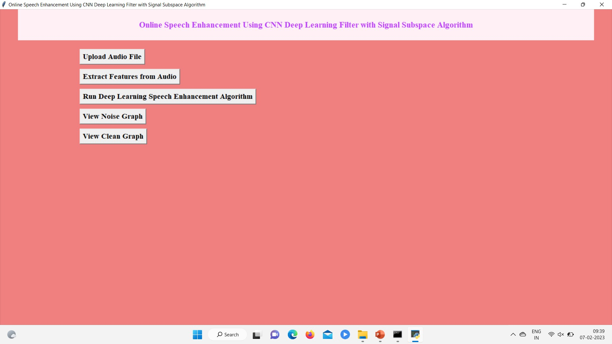
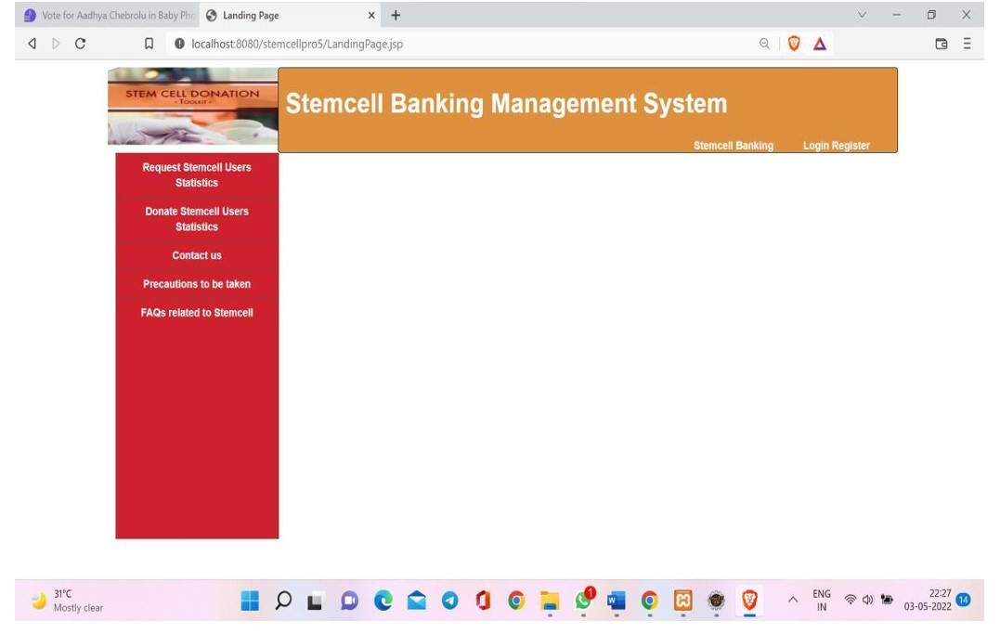

In this project, we aim to tackle the problem of speech denoising using deep feature loss.

Features:
Its goal is to remove noise and preserve useful information
We present an end-to-end deep learning approach to denoising speech signals by processing the
raw waveform directly
Given an input audio containing speech corrupted by an additive background signal, the
system aims to produce a processed signal that contains only the speech content.
StemCell Banking
The main objective is to design a portal for the public which enables the registration for
storing stemcells in the stem cell bank

Features:
The system provides a list of available stemcell banks and the applicant must choose a
stemcell bank of their wish
The applicant should register and login
Then the applicant is asked to provide necessary details, complete their profiling, and then
book a slot of appropriate date and time.